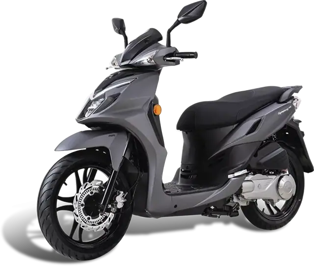
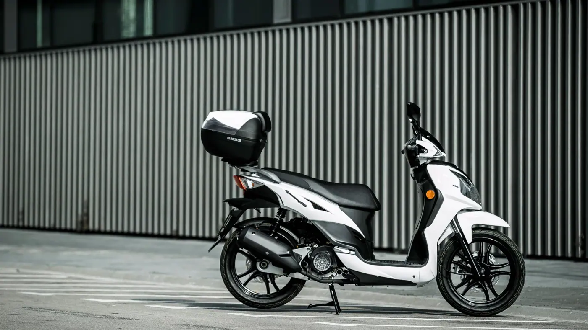
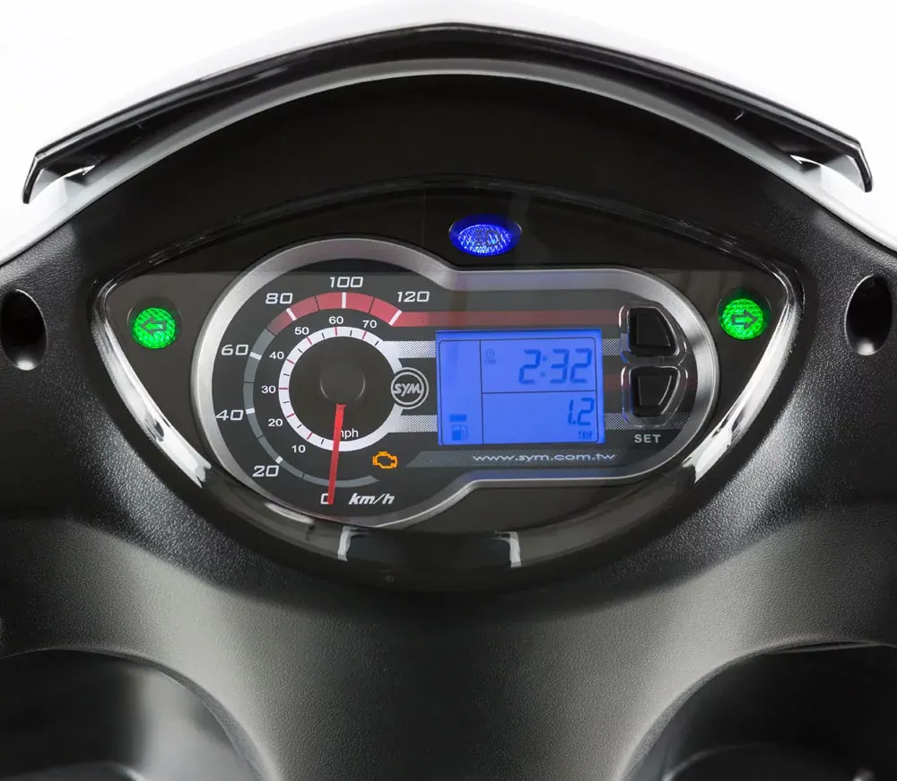
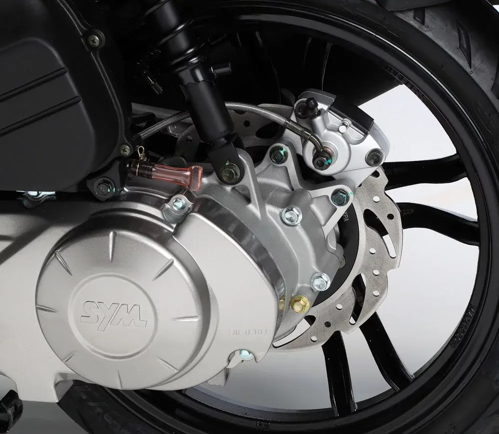
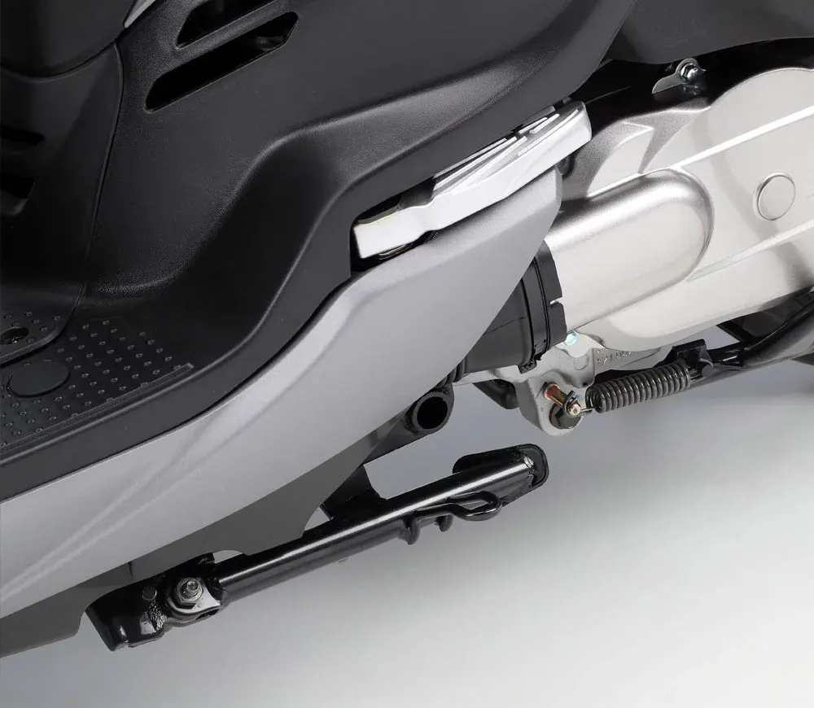
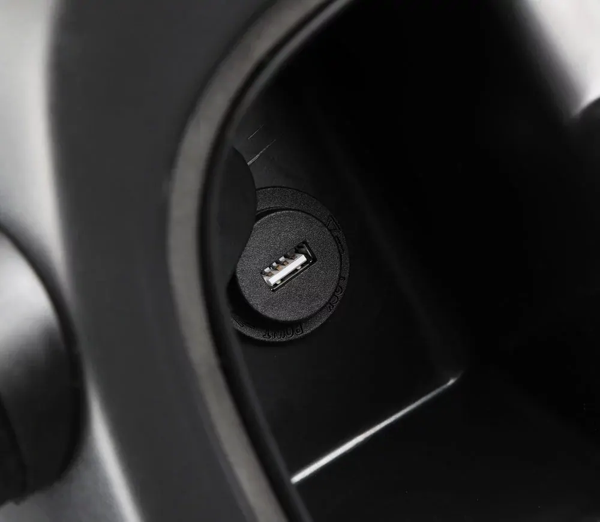

SYM
Symphony SR 125 ABS
B·A1 125 cc · Scooter
Propuesta de OpsPilot para Expomoto Córdoba, en revisión. No es la web oficial: expomotocordoba.es
Inicio › Motos › SYM › Symphony SR 125cc

SYM
Lugares por descubrir. Momentos por disfrutar. Emociones por vivir.
Precio y financiación: te los damos al momento por teléfono (pendientes de publicar en la web).




Una forma de entender la vida, de exprimir cada instante y dedicar el tiempo sólo a lo que te hace vibrar.